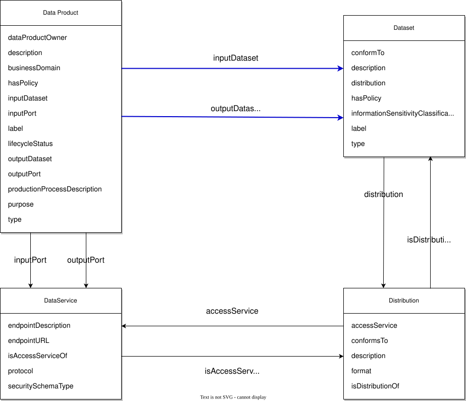

Copyright © 2024, London Stock Exchange Group plc
Copyright © 2024, Federated Knowledge, LLC
Copyright © 2024, agnos.ai UK Ltd.
Copyright © 2024, Quantyca S.p.A.
Copyright © 2024, eccenca GmbH
Copyright © 2024, Object Management Group, Inc.
Copyright © 2024, EDM Council, Inc.
USE OF SPECIFICATION – TERMS, CONDITIONS & NOTICES
The material in this document details an Object Management Group specification in accordance with the terms, conditions and notices set forth below. This document does not represent a commitment to implement any portion of this specification in any company's products. The information contained in this document is subject to change without notice.
LICENSES
Contributions to this specification are made under the terms of the Contributor License Agreement given at https://cla-assistant.io/EKGF/dprod. Each of the copyright holders listed above has agreed that no person shall be deemed to have infringed the copyright in the included material of any such copyright holder by reason of having used the specification set forth herein or having conformed any computer software to the specification.
Subject to all of the terms and conditions below, the owners of the copyright in this specification hereby grant you a fully-paid up, non-exclusive, nontransferable, perpetual, worldwide license (without the right to sublicense), to use this specification to create and distribute software and special purpose specifications that are based upon this specification, and to use, copy, and distribute this specification as provided under the Copyright Act; provided that:
This limited permission automatically terminates without notice if you breach any of these terms or conditions. Upon termination, you will immediately destroy any copies of the specifications in your possession or control.
PATENTS
This specification is made available under the OMG’s Copyright and Non-Assertion Covenant (see https://www.omg.org/cgi-bin/doc.cgi?ipr for details). The attention of adopters is directed to the possibility that compliance with or adoption of OMG specifications may require use of an invention covered by patent rights. OMG shall not be responsible for identifying patents for which a license may be required by any OMG specification, or for conducting legal inquiries into the legal validity or scope of those patents that are brought to its attention. OMG specifications are prospective and advisory only. Prospective users are responsible for protecting themselves against liability for infringement of patents.
GENERAL USE RESTRICTIONS
Any unauthorized use of this specification may violate copyright laws, trademark laws, and communications regulations and statutes. This document contains information which is protected by copyright. All Rights Reserved. No part of this work covered by copyright herein may be reproduced or used in any form or by any means--graphic, electronic, or mechanical, including photocopying, recording, taping, or information storage and retrieval systems--without permission of the copyright owner.
DISCLAIMER OF WARRANTY
WHILE THIS PUBLICATION IS BELIEVED TO BE ACCURATE, IT IS PROVIDED "AS IS" AND MAY CONTAIN ERRORS OR MISPRINTS. THE OBJECT MANAGEMENT GROUP AND THE COMPANIES LISTED ABOVE MAKE NO WARRANTY OF ANY KIND, EXPRESS OR IMPLIED, WITH REGARD TO THIS PUBLICATION, INCLUDING BUT NOT LIMITED TO ANY WARRANTY OF TITLE OR OWNERSHIP, IMPLIED WARRANTY OF MERCHANTABILITY OR WARRANTY OF FITNESS FOR A PARTICULAR PURPOSE OR USE. IN NO EVENT SHALL THE OBJECT MANAGEMENT GROUP OR ANY OF THE COMPANIES LISTED ABOVE BE LIABLE FOR ERRORS CONTAINED HEREIN OR FOR DIRECT, INDIRECT, INCIDENTAL, SPECIAL, CONSEQUENTIAL, RELIANCE OR COVER DAMAGES, INCLUDING LOSS OF PROFITS, REVENUE, DATA OR USE, INCURRED BY ANY USER OR ANY THIRD PARTY IN CONNECTION WITH THE FURNISHING, PERFORMANCE, OR USE OF THIS MATERIAL, EVEN IF ADVISED OF THE POSSIBILITY OF SUCH DAMAGES.
The entire risk as to the quality and performance of software developed using this specification is borne by you. This disclaimer of warranty constitutes an essential part of the license granted to you to use this specification.
RESTRICTED RIGHTS LEGEND
Use, duplication or disclosure by the U.S. Government is subject to the restrictions set forth in subparagraph (c) (1) (ii) of The Rights in Technical Data and Computer Software Clause at DFARS 252.227-7013 or in subparagraph (c)(1) and (2) of the Commercial Computer Software - Restricted Rights clauses at 48 C.F.R. 52.227-19 or as specified in 48 C.F.R. 227-7202-2 of the DoD F.A.R. Supplement and its successors, or as specified in 48 C.F.R. 12.212 of the Federal Acquisition Regulations and its successors, as applicable. The specification copyright owners are as indicated above and may be contacted through the Object Management Group, 9C Medway Rd, PMB 274, Milford, MA 01757, U.S.A.
TRADEMARKS
CORBA®, CORBA logos®, FIBO®, Financial Industry Business Ontology®, FINANCIAL INSTRUMENT GLOBAL IDENTIFIER®, IIOP®, IMM®, Model Driven Architecture®, MDA®, Object Management Group®, OMG®, OMG Logo®, SoaML®, SOAML®, SysML®, UAF®, Unified Modeling Language®, UML®, UML Cube Logo®, VSIPL®, and XMI® are registered trademarks of the Object Management Group, Inc.
For a complete list of trademarks, see: https://www.omg.org/legal/tm_list.htm. All other products or company names mentioned are used for identification purposes only and may be trademarks of their respective owners.
COMPLIANCE
The copyright holders listed above acknowledge that the Object Management Group (acting itself or through its designees) is and shall at all times be the sole entity that may authorize developers, suppliers and sellers of computer software to use certification marks, trademarks or other special designations to indicate compliance with these materials. Software developed under the terms of this license may claim compliance or conformance with this specification if and only if the software compliance is of a nature fully matching the applicable compliance points as stated in the specification. Software developed only partially matching the applicable compliance points may claim only that the software was based on this specification but may not claim compliance or conformance with this specification. In the event that testing suites are implemented or approved by Object Management Group, Inc., software developed using this specification may claim compliance or conformance with the specification only if the software satisfactorily completes the testing suites.
The concept of Data Products has emerged as organizations increasingly recognize the value of data as an asset to be managed and distributed like any other product. As more companies adopt decentralized data architectures, such as Data Mesh, the need for standardized methods to describe and manage data products consistently across platforms has become critical. This is where the [[dprod]] specification, built on W3C Linked Data standards, becomes essential. Without such a standard, organizations face significant challenges: inconsistent metadata across diverse data products, limited discoverability, and interoperability issues that hinder data integration from various sources. As data ecosystems grow, the lack of a common framework also impedes scalability, increases vendor lock-in, and makes it difficult to manage these products effectively.
DPROD offers a solution by providing a clear schema for describing data products, ensuring they are discoverable, interoperable, and treated with the same level of accountability as traditional products.
The W3C tech stack is perfectly suited to address these challenges because it was designed to foster interconnected, decentralized systems, providing a robust framework for creating metadata that is both machine-readable and human-understandable. DPROD enables consistent terminology across different platforms, domains, and organizations, allowing advanced users to semantically enrich their data products and connect them into distributed knowledge graphs.
As more organizations strive to build and scale data products, DPROD provides the standardization needed to ensure interoperability and unlock the full potential of decentralized data ecosystems in a controlled and mature way.
The Data Product (DPROD) specification is a profile of the Data Catalog (DCAT) Vocabulary, designed to describe Data Products. This document defines the schema and provides examples of its use.
DPROD extends DCAT to enable publishers to describe Data Products and data services in a decentralized way. By using a standard model and ontology, DPROD facilitates the consumption and aggregation of metadata from multiple Data Marketplaces. This approach increases the discoverability of products and services, supports decentralized data publishing, and enables federated search across multiple sites using a uniform query mechanism and structure.
The namespace for DPROD terms is https://www.omg.org/spec/DPROD/dprod/
The suggested prefix for the DPROD namespace is dprod
DPROD follows two basic principles:
The DPROD specification has four main aims:
A data product is conformant with this specification if it satisfies the [[SHACL]] constraints provided in the file dprod-shapes.ttl.
All terms introduced in this specification are given definitions in the Data Product Model defined later.
The following acronyms are used in this specification.
Namespaces and prefixes used in normative parts of this Profile are shown in the following table.
| Prefix | Namespace IRI | Source |
|---|---|---|
dprod
|
https://www.omg.org/spec/DPROD/dprod/
|
[[dprod]] |
dcat
|
http://www.w3.org/ns/dcat#
|
[[vocab-dcat-3]] |
dct
|
http://purl.org/dc/terms/
|
[[dcterms]] |
odrl
|
http://www.w3.org/ns/odrl/2/
|
[[odrl-model]] |
owl
|
http://www.w3.org/2002/07/owl#
|
[[owl2-quick-reference]] |
prov
|
http://www.w3.org/ns/prov#
|
[[prov-overview]] |
rdf
|
http://www.w3.org/1999/02/22-rdf-syntax-ns#
|
[[rdf11-primer]] |
rdfs
|
http://www.w3.org/2000/01/rdf-schema#
|
[[rdf-schema]] |
sh
|
http://www.w3.org/ns/shacl#
|
[[shacl]] |
xsd
|
http://www.w3.org/2001/XMLSchema#
|
[[xmlschema-2]] |
Data Mesh Architectures [[Data Mesh]] use input and output ports to manage how data enters and leaves a Data Product. These ports can handle different formats, schemas, and protocols. Input ports bring in data, while output ports send data to other Data Products for aggregation, reuse, analysis or reporting, etc.
In the [[[vocab-dcat-3]]] framework, a Data Service is a way to describe services that provide access to data. Data Services give standardized, machine-readable descriptions of how to access one or more datasets or data processing functions.
Data Services specify how to access and download the data. In DPROD, Data Services are connected to Distributions by a property called isAccessServiceOf; on the Distribution one can specify formats (like CSV or JSON etc.) and provide metadata about the "physical model" of the data. Distributions link to Datasets and DCAT has a very rich vocabulary for describing every aspect of a dataset. Finally, Datasets use the conformsTo property to link to the "logical model" where one can specify one's own rich semantic metadata.
By linking Data Product ports to DCAT DataServices ([[vocab-dcat-3]]), DPROD can describe Data Products in a way that machines can read across the organization. This makes it easier for data teams to build and manage their own data products independently, while still working well with the rest of the organization's data.
Using standards like DCAT helps create a strong and clear way to define Data Products. It ensures that as data becomes more complex, the methods for describing, sharing, and using data stay consistent and reliable. It also allows different organizations to share data securely and in a standardized way.

The Profile consists of the following classes:
dcat:Catalog) - The collection of Data Products
dprod:DataProduct) - A data product may have input and output ports, code and
metadata
dcat:DataService) - A digital interface that provides access to a Dataset.
This can be an HTTP URL, a Database or a FileShare, etc.
dcat:Distribution) - A specific representation of a dataset (CSV, JSON, ADLS etc.)
which can conform to a physical model
dcat:Dataset) - A collection of related data that can conform to a logical model
As DCAT Data Services, the DPROD input and output ports can specify connection details, they have distributions that define formats, and link to datasets that conform to shared schemas. In this example, the UK Bonds Data Product includes an output port, which is a RESTful API. This API delivers JSON data conforming to the shared FIBO specification for callable bonds.
{
"@context": "https://ekgf.org/dprod/spec/archive/1.0/dprod.jsonld",
"id": "https://y.com/products/uk-bonds",
"type": "DataProduct",
"title": "UK Bonds",
"description": "UK Bonds is your one-stop-shop for all your bonds!",
"dataProductOwner": "https://www.linkedin.com/in/tonyseale/",
"lifecycleStatus" : "https://www.omg.org/spec/DPROD/data/lifecycle-status/Consume",
"outputPort": {
"type": "DataService",
"endpointURL": "https://y.com/uk-10-year-bonds",
"isAccessServiceOf": {
"type": "Distribution",
"format": "https://www.iana.org/assignments/media-types/application/json",
"isDistributionOf": {
"type": "Dataset",
"id": "https://y.com/products/uk-bonds/datasets/10-year",
"conformsTo": "https://spec.edmcouncil.org/fibo/ontology/SEC/Debt/Bonds/CallableBond"
}
}
}
}
The examples map the type of the above classes to @type in the JSON-LD serializations.
One can use JSON-LD to extend the familiar JSON syntax with the shared semantics defined by DCAT and DPROD.
The JSON above can be pasted into https://json-ld.org/playground.
One can see that the schema resolves.
The following sections are driven by the Shapes definitions for DPROD, which represent the properties expected to be used for instances of the above classes. As such, they include properties defined by the DCAT specification which DPROD extends. The prefix in the identifier for each entry indicates the ontology defining the property.
A rational, managed, and governed collection of data, with purpose, value and ownership, meeting consumer needs over a planned life-cycle.
A data product may have input and output ports, code and metadata
The name given to the data product.
| Identifier: | rdfs:label |
|---|---|
| Label: | data product label shape |
| Domain: | dprod:DataProduct |
| Range: | xsd:string |
A free text description of the data product.
| Identifier: | dct:description |
|---|---|
| Label: | data product description shape |
| Domain: | dprod:DataProduct |
| Range: | xsd:string |
The agent that is accountable overall for the data product, including managing it through its lifecycle.
| Identifier: | dprod:dataProductOwner |
|---|---|
| Label: | data product owner |
| Domain: | dprod:DataProduct |
| Range: | prov:Agent |
The business or information area supported by the data product.
| Identifier: | dprod:domain |
|---|---|
| Label: | domain |
| Comment: | The domain is intended to be a resource in its own right. This specification does not constrain the class to be used. |
| Domain: | dprod:DataProduct |
| Range: |
A set of services exposed by a data product to collect its source data and makes it available for further internal transformation. An input port can receive data from one or more upstream sources in a push (i.e. asynchronous subscription) or pop mode (i.e. synchronous query). Each data product may have one or more input ports.
| Identifier: | dprod:inputPort |
|---|---|
| Label: | input port |
| Domain: | dprod:DataProduct |
| Range: | dcat:DataService |
A set of services exposed by a data product to share the generated data in a way that can be understood and trusted.
| Identifier: | dprod:outputPort |
|---|---|
| Label: | output port |
| Domain: | dprod:DataProduct |
| Range: | dcat:DataService |
The source data made available to the data product through input data services. Depending on the lifecycle of the data product, this may be a stated or inferred relationship aligned with the input ports.
| Identifier: | dprod:inputDataset |
|---|---|
| Label: | input dataset |
| Domain: | dprod:DataProduct |
| Range: | dcat:Dataset |
The data that is exposed by the data product through output data services in a way that can be understood and trusted. Depending on the lifecycle of the data product, this may be a stated or inferred relationship aligned with the output ports.
| Identifier: | dprod:outputDataset |
|---|---|
| Label: | output dataset |
| Domain: | dprod:DataProduct |
| Range: | dcat:Dataset |
A description of the objectives and intended usage of the data product.
| Identifier: | dprod:purpose |
|---|---|
| Label: | purpose |
| Domain: | dprod:DataProduct |
| Range: | xsd:string |
An ODRL conformant policy expressing the rights associated with the data product. This is an inferred relationship based on the rights expressed on the individual datasets of the data product.
| Identifier: | odrl:hasPolicy |
|---|---|
| Label: | data product has policy shape |
| Domain: | dprod:DataProduct |
| Range: | odrl:Policy |
The development status of the data product.
| Identifier: | dprod:lifecycleStatus |
|---|---|
| Label: | lifecycle status |
| Domain: | dprod:DataProduct |
| Range: | dprod:DataProductLifecycleStatus |
A collection of operations that provides access to one or more datasets or data processing functions.
A site or end-point providing operations related to the discovery of, access to, or processing functions on, data or related resources.
The dataset distribution that is being offered through this data service.
| Identifier: | dprod:isAccessServiceOf |
|---|---|
| Label: | is access service of |
| Domain: | dcat:DataService |
| Range: | dcat:Distribution |
A protocol (possibly one of many options) used to communicate with this data service.
| Identifier: | dprod:protocol |
|---|---|
| Label: | protocol |
| Domain: | dcat:DataService |
| Range: | dcat:Protocol |
The security schema type used for authentication and communication with this Data Service.
| Identifier: | dprod:securitySchemaType |
|---|---|
| Label: | data service security schema type shape |
| Domain: | dcat:DataService |
| Range: | dcat:SecuritySchemaType |
The root location or primary endpoint of the service.
| Identifier: | dcat:endpointURL |
|---|---|
| Label: | end-point del servicio |
| Comment: | Kořenové umístění nebo hlavní přístupový bod služby (IRI přístupné přes Web). |
| Domain: | dcat:DataService |
| Range: | rdfs:Resource |
A description of the services available via the end-points, including their operations, parameters etc.
| Identifier: | dcat:endpointDescription |
|---|---|
| Label: | descripción del end-point del servicio |
| Comment: | A description of the service end-point, including its operations, parameters etc. |
| Domain: | dcat:DataService |
| Range: |
A specific representation of a dataset. A dataset might be available in multiple serializations that may differ in various ways, including natural language, media-type or format, schematic organization, temporal and spatial resolution, level of detail or profiles (which might specify any or all of the above).
A data service that gives access to the distribution of the dataset.
| Identifier: | dcat:accessService |
|---|---|
| Label: | data access service |
| Comment: | A site or end-point that gives access to the distribution of the dataset. |
| Domain: | dcat:Distribution |
| Range: | dcat:DataService |
The schema that the distribution conforms to that is format and technology dependent.
| Identifier: | dct:conformsTo |
|---|---|
| Label: | distribution conforms to shape |
| Domain: | dcat:Distribution |
| Range: |
The dataset that this distribution makes available.
| Identifier: | dprod:isDistributionOf |
|---|---|
| Label: | is distribution of |
| Domain: | dcat:Distribution |
| Range: | dcat:Dataset |
The file format of the distribution.
| Identifier: | dct:format |
|---|---|
| Label: | distribution format shape |
| Domain: | dcat:Distribution |
| Range: |
A collection of data, published or curated by a single source, and available for access or download in one or more representations.
The name given to the dataset
| Identifier: | rdfs:label |
|---|---|
| Label: | dataset label shape |
| Domain: | dcat:Dataset |
| Range: | xsd:string |
Free text description of the dataset.
| Identifier: | dct:description |
|---|---|
| Label: | dataset distribution shape |
| Domain: | dcat:Dataset |
| Range: | xsd:string |
The type or genre of the dataset.
| Identifier: | dct:type |
|---|---|
| Label: | dataset type shape |
| Domain: | dcat:Dataset |
| Range: |
An available distribution of the dataset.
| Identifier: | dcat:distribution |
|---|---|
| Label: | distribuce |
| Comment: | An available distribution of the dataset. |
| Domain: | dcat:Dataset |
| Range: | dcat:Distribution |
A model, schema, ontology, view or profile that the dataset conforms to.
| Identifier: | dct:conformsTo |
|---|---|
| Label: | dataset conforms to shape |
| Domain: | dcat:Dataset |
| Range: |
An ODRL conformant policy expressing the rights associated with the resource.
| Identifier: | odrl:hasPolicy |
|---|---|
| Label: | dataset has policy shape |
| Domain: | dcat:Dataset |
| Range: |
More granular classification that indicates the level of control and protection that must be applied to the asset due to the nature of the data and its sensitivity or importance to the organization.
| Identifier: | dprod:informationSensitivityClassification |
|---|---|
| Label: | information sensitivity classification |
| Domain: | dcat:Dataset |
| Range: | dprod:InformationSensitivityClassification |
The development status of the data product taken from a controlled list (e.g. Ideation, Design, Build, Deploy, Consume).
The lifecycle of the data product as defined by EDM Council CDMC
A classification of the information within a dataset to indicate the level of control and protection that must be applied.
A detailed specification, possibly including a specific version, for how to communicate with a service.
A classification encompassing a set of rules used for authentication and communication.
This section contains some worked examples illustrating how to use [[dprod]] for some common use cases. All these examples are provided as accompanying machine-readable files, from which this part of the specification is automatically generated (hence soem formatting variations).
Rates for SBA Pool that are Mortgage Backed Securities.
The data product is provided through 3 ports:
{ "@context": "https://ekgf.org/dprod/spec/archive/1.0/dprod.jsonld",
"id": "sba-pool-rates",
"@id": "https://y.com/products/sba-pool-rates",
"@type": "DataProduct",
"title": "SBA Pool Rates",
"description": "Rates for SBA Pool that are Mortgage Backed Securities. The data product is provided through 3 ports, one of them proving all SBA pool rates through a query to a database, another port providing EMEA only rates through an api and another one providing US only rates through a Kafka topic",
"dataProductOwner": "https://www.schema.xxx/person/johnSmith",
"lifecycle" : "Consume",
"outputPort": [{
"@type": "dcat:DataService",
"id": "sba-pool-rate-tabular-prod1",
"environment": "PROD",
"@id": "https://y.com/service/sba-pool-rate-tabular-prod1",
"dcat:endpointURL": "jdbc:oracle:thin@sd656-5656-6745.ldn.organiation.com:43534/PGPERG.WORLD",
"sql": "select * from ...",
"isAccessServiceOf": {
"@id": "https://y.com/distribution/sba-pool-rate-tabular",
"id": "sba-pool-rate-tabular",
"@type": "dcat:Distribution",
"dcterms:format": "https://www.iana.org/assignments/media-types/application/sql",
"isDistributionOf": {
"@type": "dcat:Dataset",
"@id": "https://y.com/dataset/sba-pool-rate",
"id": "sba-pool-rate",
"dcat:conformsTo": "https://spec.edmcouncil.org/fibo/ontology/SEC/Debt/MortgageBackedSecurities/SBA-Pool"
}
}
}
,
{
"@type": "dcat:DataService",
"id": "sba-pool-rate-emea-api-prod1",
"environment": "PROD",
"@id": "https://y.com/service/sba-pool-rate-emea-api-prod1",
"dcat:endpointURL": "https://example.org/mbs/SBA-Pool-location-emea",
"dcat:conformsTo": "../resources/users.yaml'" ,
"isAccessServiceOf": {
"@id": "https://y.com/distribution/sba-pool-rate-emea-json1",
"id": "sba-pool-rate-emea-json1",
"@type": "dcat:Distribution",
"dcterms:format": "https://www.iana.org/assignments/media-types/application/json",
"isDistributionOf": {
"@type": "dcat:Dataset",
"@id": "https://y.com/dataset/sba-pool-rate-emea",
"description": "SBA pool data that cover EMEA accessed through an api" ,
"geographicalCoverage" :"https://y.com/country/EMEA",
"id": "sba-pool-rate-emea",
"dcat:conformsTo": "https://spec.edmcouncil.org/fibo/ontology/SEC/Debt/MortgageBackedSecurities/SBA-Pool"
}
}
}
, {
"@type": "dcat:DataService",
"id": "sba-pool-rate-json-prod1",
"@id": "https://y.com/service/sba-pool-rate-json-prod1",
"dcat:endpointURL": "q1.debt.mbs.dataset.us",
"isAccessServiceOf": {
"@id": "https://y.com/distribution/sba-pool-rate-json",
"id": "sba-pool-rate-json",
"@type": "dcat:Distribution",
"dcterms:format": "https://www.iana.org/assignments/media-types/application/json",
"conformsTo": "http://confluent-registry-y/rates-json-schema.json",
"schemaCompatiblity": "backwards compatible",
"isDistributionOf": {
"@type": "dcat:Dataset",
"@id": "https://y.com/dataset/sba-pool-rate-us",
"id": "sba-pool-rate-us",
"geographicalCoverage" :"https://y.com/country/US",
"dcat:conformsTo": "https://spec.edmcouncil.org/fibo/ontology/SEC/Debt/MortgageBackedSecurities/SBA-Pool"
}
}
}
]
}
For real world data products, the core data product details will be part of a wider set of metadata that allows the data and data product to be used effectively.
Below is an example of extending the DPROD data product, specifically by adding an agreement to a data product.
In this example, a Data Product Agreement is defined as a subclass of FIBO Agreement.
Definition of a simple Agreement based on FIBO:
[
{
"@context": [
"https://ekgf.org/dprod/spec/archive/1.0/dprod.jsonld",
{
"fibo": "http://spec.edmcouncil.org/fibo/ontology/FND/Agreements/MetadataFNDAgreements/#",
"ex": "http://example.org/dp#"
}
],
"@id": "ex:isSubjectToAgreement",
"@type": "rdf:Property",
"rdfs:label": "Data Product is Subject To FIBO Agreement",
"rdfs:domain": {
"@id": "DataProduct"
},
"rdfs:range": {
"@id": "DataProductAgreement"
}
},
{
"@id": "ex:DataProductAgreement",
"@type": "rdfs:class",
"rdfs:label": "DataProductAgreement",
"rdfs:subClassOf": {
"@id": "fibo:Agreement"
}
}
]
A full definition of agreements for data products is likely to be more complex than a single class and may use other information models or their profiles (such as ODRL Policy) or create dedicated definitions.
Below is an example of a Data Product with an associated Data Product Agreement with an effective date.
Using the agreement:
{
"@context": [
"https://ekgf.org/dprod/spec/archive/1.0/dprod.jsonld",
{
"fibo": "http://spec.edmcouncil.org/fibo/ontology/FND/Agreements/MetadataFNDAgreements/#",
"ex": "http://example.org/dp#"
}
],
"dataProducts": [
{
"id": "https://y.com/data-product/company-sales",
"type": "DataProduct",
"outputPort": {
"id": "https://y.com/data-product/company-sales/port/2025-sales",
"type": "DataService",
"label": "Sales",
"endpointURL": "https://y.com/data-product/company-sales/port/2025-sales",
"isAccessServiceOf": {
"type": "Distribution",
"format": "https://www.iana.org/assignments/media-types/application/json",
"isDistributionOf": {
"type": "Dataset",
"label": "Sales",
"id": "https://y.com/data-product/company-sales/dataset/2025-sales",
"conformsTo": "https://y.com/schema/Sale"
}
}
},
"ex:iSubjectToAgreement": {
"@id": "ex:VVSimpleAgreement",
"@type": "ex:DataProductagreement"
}
}
],
"agreements": [
{
"@id": "ex:VVSimpleAgreement",
"@type": "ex:DataProductAgreement",
"rdfs:label": "Very Simple Data Product Agreement",
"fibo:hasEffectiveDate": {
"@type": "xsd:date",
"@value": "2024-08-31"
}
}
]
}
The Data Product provides to the consumers (dprod:outputDataset) datasets defined based on DCAT. Datasets should be described (dcat:conforms) with logical models. Logical models describe business entities and their properties (attributes and relationships) with consistent business terms and they are technology independent. Ideally, logical models are based on existing standards eg, FIBO, CDM etc. If a logical model does not exist to describe the dataset, then the dataset publisher can create one, preferably by using SHACL modelling language:
Example of a Dataset conforming to a SHACL Schema:
exampleDataset dcat:conforms exampleSchema:DatasetLogicalSchema.
exampleSchema:DatasetLogicalSchema a owl:Ontology, dct:Standard.
Based on SHACL all entities that exist in the dataset are Node Shapes (1). The attributes of the entities are described as Property Shapes with sh:datatype (2) The relationships are also defined as Property Shaped with sh:class the target class of the relationship (3)
# definition of the entity as a Node Shape (1)
example:Account a sh:NodeShape ;
# human readable name of the entity
rdfs:label "Account"@en ;
# description of the entity
dc:description "An Account is..." ;
# an account has a property shape Account Age.
# Definition of the property shape follows (2)
sh:property example:Account-AccountAge ;
# an account has a property shape Account Branch.
# Definition of the property shape follows (3)
sh:property example:Account-AccountBranch ;
rdfs:isDefinedBy exampleSchema:DatasetLogicalSchema;
.
# (2) Definition of the Account-AccountAge property shape
# describing that an account MUST have exactly one
# AccountAge attribute and its datatype is integer
example:Account-AccountAge a sh:PropertyShape ;
sh:path example:AccountAge ;
sh:datatype xsd:integer ;
sh:minCount 1 ;
sh:maxCount 1 ;
rdfs:isDefinedBy exampleSchema:DatasetLogicalSchema ;
.
# (3) Definition of the Account-AccountBranch property shape
# describing than an account must have at least one
# Account Branch which is another entity
example:Account-AccountBranch a sh:PropertyShape ;
sh:path example:AccountBranch ;
sh:class example:Branch ;
sh:minCount 1 ;
rdfs:isDefinedBy exampleSchema:DatasetLogicalSchema ;
.
# definition of the entity Branch as a Node Shape (1)
example:Branch a sh:NodeShape ;
rdfs:label "Branch"@en ;
dc:description "A Branch is.." ;
rdfs:isDefinedBy exampleSchema:DatasetLogicalSchema ;
.
{
"@context": "https://ekgf.org/dprod/spec/archive/1.0/dprod.jsonld",
"id": "https://y.com/products/equity-trade-xxx",
"@type": "DataProduct",
"title": "Equity Trade XXX",
"description": "Trade data defining the outcome of equity trades between parties in different stock markets, where the terms are primarily reflected in the tradable product. Additionally, Trade includes attributes such as the trade date, transacting parties, and settlement terms. Some attributes, such as the parties, are already defined in the Party Product and are simply referenced in Trade",
"outputPort": {
"@type": "DataService",
"endpointURL": "abfss://datasetsv1@demo.dfs.core.windows.net/demo/full/trade-euronext",
"isAccessServiceOf": {
"@type": "Distribution",
"format": "application/parquet",
"isDistributionOf": {
"@type": "Dataset",
"@id": "https://y.com/dataset/equity-trade-euronext-paris",
"title": "Equity Trade Euronext Paris XXX",
"conformsTo":"https://spec.edmcouncil.org/fibo/ontology/BP/Process/FinancialContextAndProcess/SecuritiesTrade" }
}
}
}
[
{
"@context": "https://ekgf.org/dprod/spec/archive/1.0/dprod.jsonld",
"id": "https://y.com/derived-quality-measurementA",
"@type": "QualityMeasurement",
"value": 1,
"computedOn": {
"@type": "DataProduct",
"@id": "https://y.com/products/uk-bonds"
},
"isMeasurementOf": {
"@type": "Metric",
"label": "Number of stale datasets"
}
}
,
{
"@context": "https://ekgf.org/dprod/spec/archive/1.0/dprod.jsonld",
"@id": "https://y.com/quality-measurement-B",
"@type": "QualityMeasurement",
"value": "false",
"computedOn": {
"@type": "Dataset",
"@id": "https://y.com/products/uk-bonds/yearlyPrices"
},
"isMeasurementOf": {
"@type": "Metric",
"label": "Expected distribution frequency achieved"
}
}
,
{
"@context": "https://ekgf.org/dprod/spec/archive/1.0/dprod.jsonld",
"id": "https://y.com/products/uk-bonds",
"type": "DataProduct",
"outputPort": {
"type": "DataService",
"endpointURL": "https://y.com/uk-bonds/quality-report",
"isAccessServiceOf": {
"type": "Distribution",
"isDistributionOf": {
"type": "Dataset",
"conformsTo": "https://www.w3.org/TR/vocab-dqv/#dqv:QualityMeasurement"
}
}
}
}
]
Example of a data product for Equity Trades.
The Equity Trades Data Product provides two datasets to the consumers: one for trades in London Stock Exchange (LSEG) and one in Euronext.
{
"@context": "https://ekgf.org/dprod/spec/archive/1.0/dprod.jsonld",
"id": "equity trade-xxx",
"@id": "https://y.com/products/equity-trade-xxx",
"@type": "DataProduct",
"title": "Equity Trade XXX",
"description": "Trade data defining the outcome of equity trades between parties in different stock markets, where the terms are primarily reflected in the tradable product. Additionally, Trade includes attributes such as the trade date, transacting parties, and settlement terms. Some attributes, such as the parties, are already defined in the Party Product and are simply referenced in Trade",
"dataProductOwner": "https://www.schema.xxx/person/AnnTaylor",
"lifecycle" : "Consume",
"outputPort": [{
"@type": "dcat:DataService",
"id": "equity-trade-euronext-xxx-tabular-adls-prod",
"@id": "https://y.com/service/equity-trade-euronext-xxx-adls-prod-1",
"dcat:endpointURL": "abfss://datasetsv1@demo.dfs.core.windows.net/demo/full/trade-euronext",
"dcat:endpointDescription": "Details for accessing storage account",
"isAccessServiceOf": {
"@id": "https://y.com/service/equity-trade-euronext-xxx-tabular",
"id": "equity-trade-euronext-xxx-tabular",
"@type": "dcat:Distribution",
"dcterms:format": "application/parquet",
"dcat:conformsTo": "https://cdm.finos.org/docs/event-model" ,
"isDistributionOf": {
"@type": "dcat:Dataset",
"@id": "https://y.com/dataset/equity-trade-euronext-paris",
"datasetOwner": "https://www.schema.xxx/person/JohnBarks",
"title": "Equity Trade Euronext Paris XXX",
"id": "equity-trade-euronext-paris-xxx",
"dcat:conformsTo": "https://cdm.finos.org/docs/event-model"
}
}
}
,{
"@type": "dcat:DataService",
"id": "equity-trade-lseg-xxx-tabular-adls-prod",
"@id": "https://y.com/service/equity-trade-lseg-xxx-adls-prod-1",
"dcat:endpointURL": "abfss://datasetsv1@demo.dfs.core.windows.net/demo/full/trade-lseg",
"dcat:endpointDescription": "Details for accessing storage account",
"isAccessServiceOf": {
"@id": "https://y.com/service/equity-trade-lseg-xxx-tabular",
"id": "equity-trade-lseg-xxx-tabular",
"@type": "dcat:Distribution",
"dcterms:format": "application/parquet",
"dcat:conformsTo": "https://cdm.finos.org/docs/event-model" ,
"isDistributionOf": {
"@type": "dcat:Dataset",
"@id": "https://y.com/dataset/equity-trade-lseg-xxx",
"title": "Equity Trade LSEG XXX",
"id": "equity-trade-lseg-xxx",
"dcat:conformsTo": "https://cdm.finos.org/docs/event-model"
}
}
}
]
}
ODRL is a W3C standard to describe rights and entitlements. Based on ODRL, data product and dataset publishers can describe policies in a consistent, standard and machine-readable manner. Policies contain permissions and prohibitions on specific actions that are required to be met by stakeholders.
In addition, policies may be limited by constraints (eg. temporal or geographical constraints) and duties (eg. payments) that may be imposed on the permissions.
Policies and their permitted or prohibited actions can be described at different levels, eg. a policy can target a data product, a dataset, a data service or even a column.
Sophisticated engines should interpret and enforce the ODRL policies at the appropriate level eg.:
examplePolicyA odrl:targets exampleProduct:ProductA .
examplePolicyB odrl:targets exampleDataset:DatasetA1 .
An example of a policy follows, that describes permission to distribute the data only within a specific geographic region:
examplePolicyA odrl:permission
{
"action": "odrl:distribute",
"constraint": [
{"leftOperand": "region",
"operator": "eq",
"rightOperator": "region:EMEA"
}
]
}
{
"@type": "Policy",
"id": "56456df-dfg-34535345-5545",
"assigner": 'https://schema.org/person/AdamSmith",
"target": "https://data.org/data-product/equity-trade-xxx",
"permission": [
{
"action": "odrl:read",
"constraint": [
{
"@type": "Constraint",
"leftOperand": "spatial",
"operator": "odrl:isAnyOf",
"rightOperand": [region:EMEA, region:APAC],
"description": " Permission to read all the datasets of the product if user is working inside EMEA or APAC"
}
]
}
An Observability Port is a designated interface or endpoint in a system or application specifically used for monitoring and diagnostic purposes. It allows external tools or services to collect and analyze data related to the system's performance, health, and behaviour. By exposing metrics, logs, and traces through this port, administrators and developers can gain insights into the system's state, troubleshoot issues, and ensure it operates efficiently and reliably.
DPROD has a schema-first design. The first thing to do is define a schema for the logging information. It could be a schema based on OpenTelemetry, but this uses RLOG (which is a semantic ontology for logging).
To find the Observability Port, query the ports to identify the
ones that return an RLOG:Entry:
outputPort >> isAccessServiceOf >> isDistributionOf >> conformsTo >> rlog:Entry
One can see that the example data product has two ports, one with the data
and one with the logging.
This query will return the URI of the port that returns logging
data: https://y.com/uk-bonds/observability-port.
Here is an example of a data product with an observability port:
{
"@context": "https://ekgf.org/dprod/spec/archive/1.0/dprod.jsonld",
"dataProducts": [
{
"id": "https://y.com/data-product/uk-bonds",
"type": "DataProduct",
"inputPort": [
{
"id": "https://y.com/data-product/uk-bonds/port/2024-data",
"type": "DataService"
}
],
"outputPort": [
{
"id": "https://y.com/data-product/uk-bonds/port/2024-observability",
"type": "DataService",
"label": "Observability Port",
"endpointURL": "https://y.com/data-product/uk-bonds/port/2024-observability",
"isAccessServiceOf": {
"type": "Distribution",
"format": "https://www.iana.org/assignments/media-types/application/json",
"isDistributionOf": {
"type": "Dataset",
"id": "https://y.com/data-product/uk-bonds/dataset/2024-observability",
"conformsTo": "https://y.com/schema/ObservabilityLog"
}
}
},
{
"id": "https://y.com/data-product/uk-bonds/port/2024-data",
"type": "DataService",
"label": "Data Port",
"endpointURL": "https://y.com/data-product/uk-bonds/port/2024-data",
"isAccessServiceOf": {
"type": "Distribution",
"format": "https://www.iana.org/assignments/media-types/application/json",
"isDistributionOf": {
"type": "Dataset",
"id": "https://y.com/data-product/uk-bonds/dataset/2024-data",
"conformsTo": "https://y.com/schema/Data"
}
}
}
]
}
]
}
Given that the schema defines the class for an observation, it can be used to find all observability ports on data product like this:
[https://y.com/data-product/uk-bonds/port/2024-observability] >> isAccessServiceOf >> isDistributionOf >> conformsTo >> https://y.com/schema/ObservabilityLog
In Linked Data a SPARQL query would do that:
SELECT ?port
WHERE
{
?port a dcat:DataService .
?port (dprod:isAccessServiceOf/dprod:isDistributionOf)/dcat:conformsTo rlog:Entry
}
This query will return the URI of the port that provides logging
data: https://y.com/data-product/uk-bonds/port/2024-observability.
It is important to be able to trace the lineage of data. Within DPROD, this can be done in two ways: at a high level from one data product to another and, if desired, at the more detailed level of the underlying datasets.
Data products have input and output ports, and one data product’s input port will point to another data product’s output port.
This allows a user to query the lineage. The data products all have URLs as identifiers, and properties all connect to each other, so a query can walk from one data product to the downstream data products that feed it.
One can follow the path that leads from one data product to another like this:
Data Product >> inputPort >> isAccessServiceOf >> isDistributionOf >> Input Data Product
The following example data has three data products that connect to each other through their input and output ports:
{
"@context": "https://ekgf.org/dprod/spec/archive/1.0/dprod.jsonld",
"dataProducts": [
{
"id": "https://y.com/data-product/company-finance",
"type": "DataProduct",
"inputPort": [
{
"id": "https://y.com/data-product/company-sales/port/2025-sales",
"type": "DataService"
},
{
"id": "https://y.com/data-product/company-hr/port/2025-payroll",
"type": "DataService"
}
],
"outputPort": {
"id": "https://y.com/data-product/company-sales/port/2025-balance-sheet",
"type": "DataService",
"label": "Balance Sheet",
"endpointURL": "https://y.com/data-product/company-sales/port/2025-c",
"isAccessServiceOf": {
"type": "Distribution",
"format": "https://www.iana.org/assignments/media-types/application/json",
"isDistributionOf": {
"type": "Dataset",
"id": "https://y.com/data-product/company-sales/dataset/2025-balance-sheet",
"conformsTo": "https://y.com/schema/BalanceSheet"
}
}
}
},
{
"id": "https://y.com/data-product/company-sales",
"type": "DataProduct",
"outputPort": {
"id": "https://y.com/data-product/company-sales/port/2025-sales",
"type": "DataService",
"label": "Sales",
"endpointURL": "https://y.com/data-product/company-sales/port/2025-sales",
"isAccessServiceOf": {
"type": "Distribution",
"format": "https://www.iana.org/assignments/media-types/application/json",
"isDistributionOf": {
"type": "Dataset",
"label": "Sales",
"id": "https://y.com/data-product/company-sales/dataset/2025-sales",
"conformsTo": "https://y.com/schema/Sale"
}
}
}
},
{
"id": "https://y.com/data-product/company-hr",
"type": "DataProduct",
"outputPort": {
"id": "https://y.com/data-product/company-sales/port/2025-payroll",
"type": "DataService",
"label": "Payroll",
"endpointURL": "https://y.com/data-product/company-hr/port/2025-payroll",
"isAccessServiceOf": {
"type": "Distribution",
"format": "https://www.iana.org/assignments/media-types/text/csv",
"isDistributionOf": {
"type": "Dataset",
"label": "Payroll",
"id": "https://y.com/data-product/company-sales/dataset/2025-payroll",
"conformsTo": "https://y.com/schema/Payroll"
}
}
}
}
]
}
Given this example data, starting at the data product
https://y.com/data-product/company-finance,
one could walk the relationships to find the input data products that feed it:
https://y.com/data-product/company-finance >>
:inputPort >>
:isAccessServiceOf >>
:isDistributionOf >> [
https://y.com/data-product/company-sales,
https://y.com/data-product/company-hr
]
In Linked Data, this would use a query such as:
PREFIX : <https://y.com/data-product/>
PREFIX rdfs: <http://www.w3.org/2000/01/rdf-schema#>
PREFIX dprod: <https://www.omg.org/spec/DPROD/dprod/>
SELECT DISTINCT ?input
WHERE
{
:company-finance dprod:inputPort ?inputPort .
?inputPort dprod:isAccessServiceOf/dprod:isDistributionOf/rdfs:label ?input .
}
To track lineage at a more granular level, one can also use PROV (https://www.w3.org/TR/prov-o/) at the dataset level.
dap:atnf-P366-2003SEPT
rdf:type dcat:Dataset ;
dcterms:bibliographicCitation "Burgay, M; McLaughlin, M; Kramer, M; Lyne, A; Joshi, B; Pearce, G; D'Amico, N; Possenti, A; Manchester, R; Camilo, F (2017): Parkes observations for project P366 semester 2003SEPT. v1. CSIRO. Data Collection. https://doi.org/10.4225/08/598dc08d07bb7" ;
dcterms:title "Parkes observations for project P366 semester 2003SEPT"@en ;
dcat:landingPage <https://data.csiro.au/dap/landingpage?pid=csiro:P366-2003SEPT> ;
prov:wasGeneratedBy dap:P366 ;
.
dap:P366
rdf:type prov:Activity ;
dcterms:type <http://dbpedia.org/resource/Observation> ;
prov:startedAtTime "2000-11-01"^^xsd:date ;
prov:used dap:Parkes-radio-telescope ;
prov:wasInformedBy dap:ATNF ;
rdfs:label "P366 - Parkes multibeam high-latitude pulsar survey"@en ;
rdfs:seeAlso <https://doi.org/10.1111/j.1365-2966.2006.10100.x> ;
.
See: https://www.w3.org/TR/vocab-dcat-3/#examples-dataset-provenance.
The editors gratefully acknowledge the feedback and contributions made by individuals who have participated in EDM Council's CDMC team.